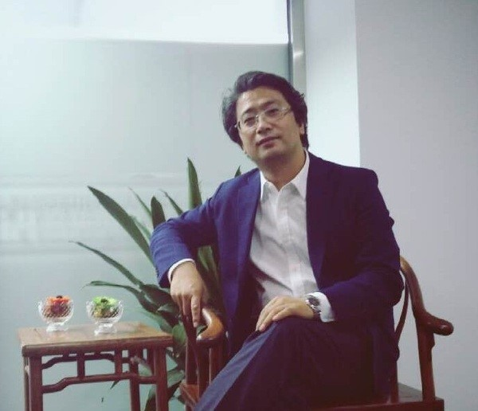

Cell:
Email: greatoldone@lovecraft.com
I am an outgoing and energetic (ask anybody) young professional, seeking a career that fits my professional skills, personality, and murderous tendencies. My squid-like head is a masterful problem solver and inspires fear in who gaze upon it. I can bring world domination to your organization.
张国宗，男，1973年1月16日出生，1996年7月毕业于河北建筑工程学院建筑工程专业获学士工学学位；2004年12月获燕山大学管理学硕士学位；2006年就读河北工业大学管理学院攻读管理学博士，项目管理与风险控制方向。现就读北京航空航天大学博士后。曾在河北省人民医院工作，高级工程师，美国项目管理协会pmp认证，任基建处处长。第九届河北省、石家庄市青联委员。卫生部医院建设专家委员会河北代表。
参加工作以来，一直从事工程项目管理工作，尤其在医疗建筑工程项目全寿命周期集成管理方面取得一定的成绩。完成20万平方米医疗建筑，并获得河北省“安济杯”优质工程荣誉。目前，河北医科大学第四医院医疗综合楼项目是河北省唯一“不超工期，不超概算”的大型公益项目；河北省人民医院医疗综合楼项目是我省首例采用专业化项目管理模式的项目，推动了我省项目管理行业由概念向实践的发展。本人通过大量的项目管理实践，在医疗建筑工程的策划、科研、规划、设计、实施、维护、运营等方面积累了大量的经验，并结合理论学习从事项目管理方向的研究，发表多篇项目管理方面论文。
北京源和医院管理服务有限公司 北京源和医院管理服务有限公司（以下简称源和医管）主要经营医院管理服务，专注于医疗PPP项目管理与咨询、医疗产业投资与管理、医院管理及运营维护及医养结合服务。目前，源和医管与多家国内一流医院达成了紧密的服务及合作关系，拥有强大的医疗专家资源，与政府建立了广泛的合作关系，具有向政府提供服务的良好信誉和经验。拥有先进的医院运营及管理体系 源和医管建立了基于国际先进医院管理和国内等级医院评审标准的包括医院管理、运营维护、区域医疗卫生服务体系、智慧医疗等方面的医院管理体系，整合了台湾的医院和医养结合管理系统、能力与经验，建立了基于PPP模式的医院管理智库，包括国内高水平医院管理专家以及欧、美、日、韩、港、台等优秀医管专家团队；此外，公司致力于医联体、分级诊疗、医养服务，提供“互联网+社会服务终端+专业照护+健康大数据”进区入户的医疗卫生与养生养老服务。·拥有强大的医疗专家团队资 源和医管拥有国内领先的医院建设项目管理专业团队（IPD模式）和医院运营管理体系和团队、医院非临床物业保障服务能力。包括中国PPP研究院专家、国家卫计委医院建设指导委员会专家委员、中华医学会医院管理专家、中国医疗建筑与装备协会专家、医疗领域投融资专家等，与台湾地区一流医疗管理团队及专家形成紧密的合作伙伴关系。同时发起建立中国精准医疗学院，汇集阜外医院、宣武医院、北大肿瘤医院、中日友好医院等国内顶级医疗专家团队，针对高血压、心脑血管、肿瘤等领域精准研究，构建医生集团和精准分病诊疗体系及临床基地，对所投医疗项目给予优质医疗资源整合与提升。拥有丰富的医院项目管理经验 其中团队成员参与的项目包括北京友谊医院顺义院区PPP项目、北京天坛医院新院项目、北京中医院顺义院区、河北省人民医院建设项目、河北医科大学第四附属医院建设项目、廊坊四院PPP建设项目、河北容城县中医院PPP托管项目、湖北宜昌妇儿医院PPP项目、中国医科大学附属第一医院鞍山医院、云南医科大学附属医院项目、巴州蒙医院项目、和静医院项目等。源和医管助力中国医疗行业发展，针对医院价值提升进行全产业链服务，包括投资融资、项目集成管理、医院运营管理、辅医及后勤物业管理、医院供应链管理、医疗产业链构建、医疗资源整合等投资、运营系统服务，构筑国内领先的基于价值的医疗投资与管理生态系统。源和医管在医疗产业投资与管理、医院管理及运营维护、医养结合服务等方面具有专业团队和能力，积累了丰富的经验，医疗PPP理论研究及实践处于国内领先水平，助力中国医疗卫生事业发展。战略合作伙伴：北京航天航空大学北京价值工程学会、中国医疗建筑与装备协会、中关村熙睿心脑肿瘤精准医疗研究院、北京建筑大学医疗建筑研究中心、北京市工程咨询公司PPP研究院、北京城建集团、中建一局、中国中元国际工程有限公司，联系电话：010-82292756肖女士：15010379581 孙先生：1860101170邮箱：sunyuan@yhoocapital.com
五月的校园，百花争艳，春意浓浓。5月30日下午，副县长张国宗在县政府办、县教育局等部门负责人的陪同下，到临漳县职教中心亲切看望和慰问高三教师。
座谈会上，张县长首先听取了职教中心校长孔繁杰的对口高考备考迎考工作汇报。对我校一年以来取得的工作成绩给与了充分地肯定，对学校存在的困难和问题提出了具体的意见和解决办法。
随后张县长向战斗在一线的全体高三教师表示亲切地慰问和衷心地感谢。他指出，这几年，通过不断的努力，全县教育事业取得了可喜的成绩，教育教学质量逐年提高。现在距离高考已不到10天时间，这是最为关键的时候，希望教师们再接再厉，对学生进行科学引导。一方面要引导学生的学习，重视学生基础，培养学生思考问题分析问题的能力；另一方面要积极引导学生心理，增强学生信心，让他们以放松心态迎接人生的挑战，发挥出最佳水平。他要求，学校要积极配合，为广大考生营造一个良好的高考氛围。他希望，教师们继续发扬奉献精神，以更饱满的热情投入到教学工作中，让今年的对口高考能取得突破性的进展。
张县长的谆谆教诲和殷切希望，深深地感染和鼓舞着在场的每一位老师。大家表示，决不辜负领导们的期望和全县人民的重托，全身心投入对口高考备考迎考工作，力争今年对口高考再上新台阶。
张县长一行人还带来了油和大米等慰问品.